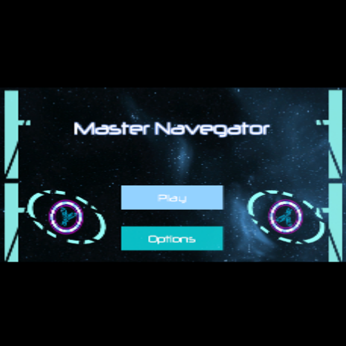

Este juego fue hecho durante la "Future Game Developers Jam" de UNIAT
Este es un juego que realize junto con un equipo de alumnos de UNIAT durante la "Future Game Developer Jam". El tema de la Jam era "el poder de las apariencias" además el género del juego fue seleccionado al azar. Nuestro género asignado fue un First Person Shooter / Puzzle. Decidimos hacer un juego en el que el jugador tuviera un arma que puede cambiar las propiedades físicas del objeto al que dispara para poder pasar los niveles
Yo me enfoque principalmente en la programación de los efectos que tendrían los objetos al ser disparados por diferentes tipos de rayos que usa el arma del jugador como la gravedad, el magnetismo, el rebote y la rotación